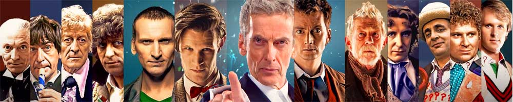

|  |
| Home The Doctors The Companions The Villains Show History |
The Eighth DoctorThe Eighth Doctor is an incarnation of the Doctor, the protagonist of the BBC science fiction television series Doctor Who. He is portrayed by Paul McGann. The character was introduced in the 1996 TV film Doctor Who, a back-door pilot produced in an unsuccessful attempt to relaunch the series following its 1989 cancellation. While the Eighth Doctor initially had only one on-screen appearance, his adventures were portrayed extensively in subsequent spin-off media, including more than 70 audio dramas starring McGann. In 2013, the actor reprised the role in the mini-episode "The Night of the Doctor", which depicts the Eighth Doctor's final adventure. Within the series' narrative, the Doctor is a centuries-old alien, a Time Lord from the planet Gallifrey, who travels in time and space in his TARDIS, frequently with companions. When the Doctor is critically injured, he canregenerate his body but in doing so gains a new physical appearance and with it, a distinct new personality. McGann portrays the eighth such incarnation, a passionate, enthusiastic, and eccentric character. His only companion in the television film is Grace Holloway (Daphne Ashbrook), a medical doctor whose surgery is responsible for triggering his regeneration. In the continued adventures of the character depicted in audio dramas, novels and comic books he travels alongside numerous other companions, including self-styled "Edwardian Adventuress" Charley, the alien Destrii and present-day humans Lucie and Sam. |
|
Erik Eyler |
Ann Marie Skjold |
Content derived from Doctor Who Wikipedia page. |